🖥️ Installation et configuration de VMware ESXi
Cette page décrit l’installation et la configuration initiale d’un hôte VMware ESXi 8.0 dans le cadre du projet BESAFE.
⚙️ Détails techniques
| Élément | Valeur |
|---|---|
| Version | VMware ESXi 8.0 |
| Matériel | 24 CPUs x Intel(R) Xeon(R) CPU E5-2690 v3 @ 2.60GHz – 256 Go RAM |
| Rôle | Hyperviseur de virtualisation (Cluster BESAFE) |
| Objectif | Héberger les VMs d’infrastructure (AD, PKI, GLPI, etc.) |
🌐 Étape 1 : Configuration réseau de management
Cette section décrit la configuration réseau utilisée par l’hôte ESXi pour son administration et son intégration dans l’infrastructure BESAFE.
La configuration réseau de management permet :
- l’accès à l’interface ESXi Host Client
- la résolution DNS interne
- l’intégration dans l’environnement Active Directory / DNS
- la communication avec les services d’infrastructure (monitoring, sauvegarde, etc.)
📡 Configuration IPv4
| Paramètre | Valeur |
|---|---|
| Mode | Statique |
| Adresse IP | 10.47.101.201 |
| Masque | 255.255.255.0 |
| Passerelle | 10.47.101.254 |
Cette adresse correspond au réseau de management de l’infrastructure.
L’accès à l’hyperviseur s’effectue via : https://10.47.101.201 ou https://nte-esxi-001
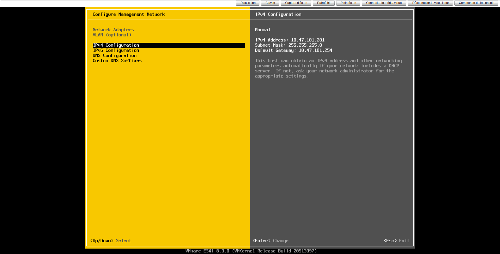
🧭 Configuration DNS
| Paramètre | Valeur |
|---|---|
| DNS principal | 10.47.30.1 |
| DNS secondaire | 10.47.30.2 |
| Nom d’hôte | nte-esxi-001 |
| Domaine | besafeit.local |
Les serveurs DNS utilisés sont les contrôleurs de domaine de l’infrastructure BESAFE.
Cela permet notamment :
- la résolution des services internes
- l’intégration dans les outils d’administration
- l’utilisation du FQDN pour l’accès à l’hyperviseur
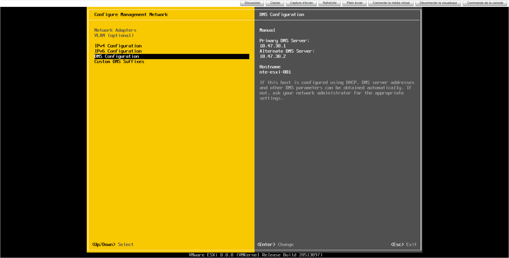
🔎 Suffixe DNS
| Paramètre | Valeur |
|---|---|
| Search Domain | besafeit.local |
Ce suffixe permet la résolution automatique des noms courts.
Exemple : nte-esxi-001
sera automatiquement résolu vers : nte-esxi-001.besafeit.local
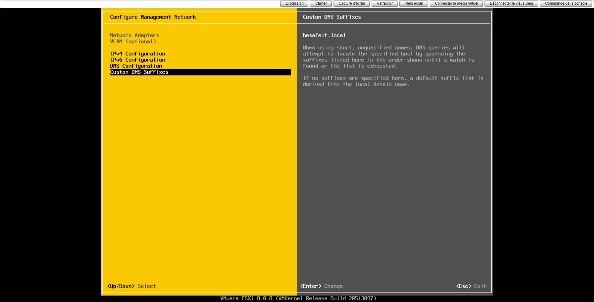
🧩 Intégration dans l’architecture BESAFE
Le réseau de management ESXi est isolé dans un VLAN dédié à l’administration de l’infrastructure.
Cela permet :
- de limiter l’exposition de l’hyperviseur
- de séparer le trafic d’administration du trafic VM
- d’appliquer des règles de sécurité spécifiques
🎯 Résultat attendu
- accès sécurisé à l’hyperviseur
- résolution DNS interne fonctionnelle
- intégration dans l’infrastructure BESAFE
- isolation du réseau d’administration
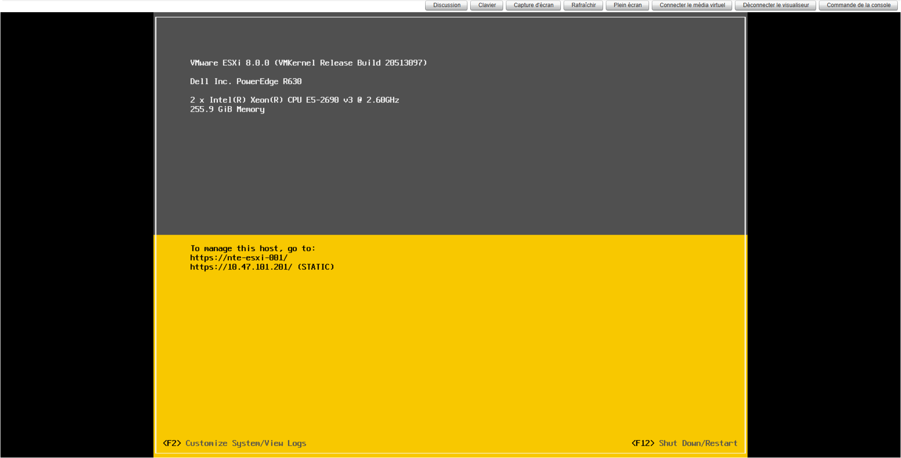
🔀 Étape 2 : Architecture réseau virtuelle
Cette section décrit l’architecture réseau virtuelle de l’hôte ESXi nte-esxi-001 au sein de l’infrastructure BESAFE.
L’objectif est de comprendre :
- comment les flux sont segmentés
- comment les interfaces VMkernel sont utilisées
- comment les machines virtuelles accèdent au réseau
- comment l’hyperviseur est connecté au réseau physique
🧠 Architecture générale
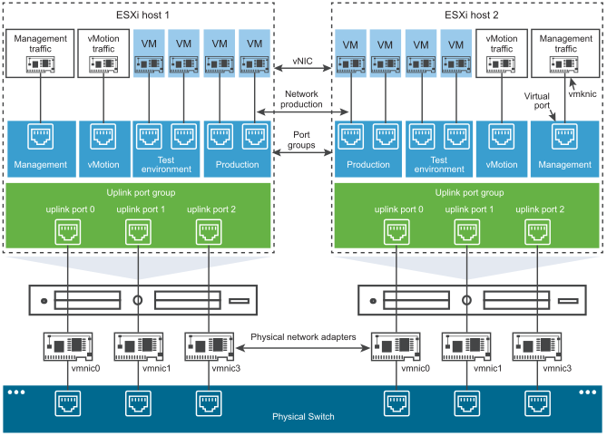
Ce schéma illustre le fonctionnement du réseau virtuel VMware.
Chaque hôte ESXi possède :
- des interfaces physiques (vmnic)
- des commutateurs virtuels
- des interfaces VMkernel
- des port groups
Les flux réseau sont ensuite transportés vers le switch physique de l’infrastructure.
🌐 Interface VMkernel de management
La première interface VMkernel de l’hôte est vmk0.
Elle correspond à l’interface utilisée pour :
- l’administration de l’hyperviseur
- l’accès au ESXi Host Client
- la communication avec vCenter
- les services d’infrastructure
Cette interface est associée au port group de management.
Le trafic qui transite par cette interface inclut notamment :
- SSH
- HTTPS
- supervision
- API vSphere
Cette interface constitue donc le point d’entrée principal de l’hyperviseur.
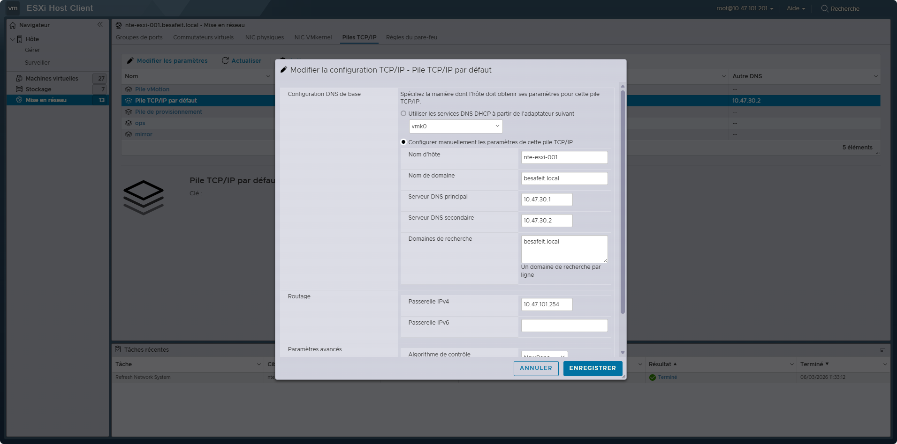
🔁 Interfaces VMkernel dédiées aux services
L’hôte dispose également de plusieurs interfaces VMkernel supplémentaires.
Ces interfaces permettent de séparer les flux critiques de l’infrastructure.
Dans cette architecture on retrouve :
vmk1 — réseau iSCSI primaire
Cette interface est utilisée pour la communication avec la baie de stockage via le protocole iSCSI.
Elle est rattachée à un vSwitch dédié au stockage afin d’isoler complètement ce trafic du reste du réseau.
vmk2 — réseau iSCSI secondaire
Cette interface correspond au second réseau iSCSI.
Elle permet :
- le multipathing
- la tolérance de panne
- une meilleure répartition de charge
Les deux interfaces iSCSI fonctionnent donc sur deux réseaux distincts.
vmk3 — réseau vMotion
Cette interface est dédiée au trafic vMotion.
Elle permet la migration des machines virtuelles entre les hôtes ESXi sans interruption de service.
Le trafic vMotion est généralement très important en volume, c’est pourquoi il est isolé sur un réseau spécifique.
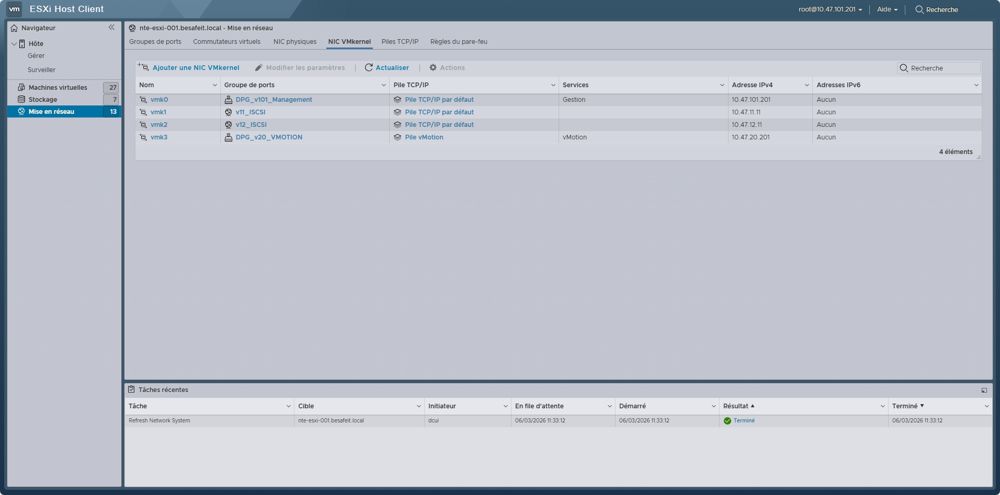
L’infrastructure utilise un vSphere Distributed Switch nommé : VDS_TRUNK
Le distributed switch permet :
- une configuration réseau centralisée
- une cohérence entre tous les hôtes ESXi
- la gestion centralisée des VLAN
- une administration simplifiée via vCenter
Tous les VLAN de l’infrastructure transitent via ce vDS.
🔌 vSwitch dédiés au stockage
En complément du vDS, l’hôte dispose de deux vSwitch standards :
VISCSI_11VISCSI_12
Ces commutateurs virtuels sont exclusivement utilisés pour le trafic iSCSI.
Ce choix d’architecture permet :
- d’isoler totalement le trafic stockage
- d’éviter toute interférence avec le réseau VM
- d’améliorer la performance et la stabilité du stockage
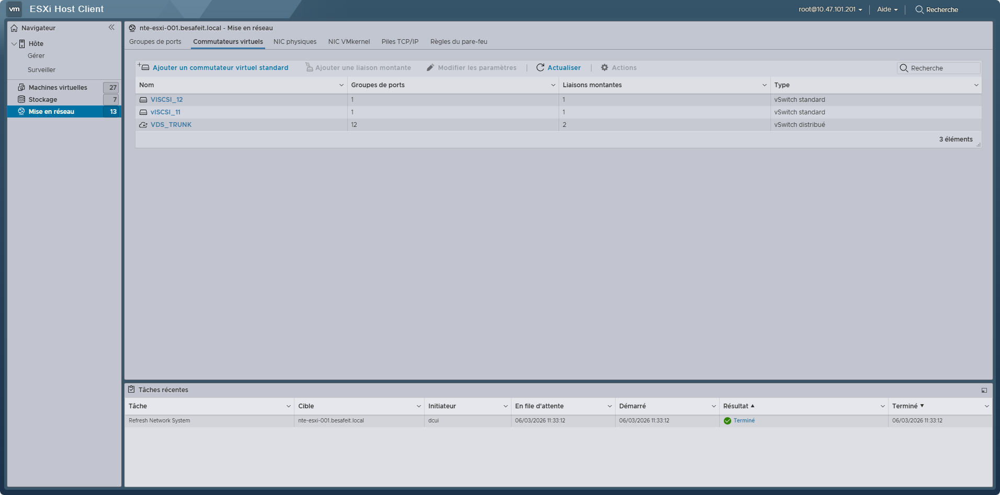
📦 Port Groups
Les port groups sont les points de connexion entre :
- les machines virtuelles
- les réseaux VLAN de l’infrastructure
Chaque port group correspond à un VLAN spécifique.
Les machines virtuelles sont ensuite connectées à ces port groups selon leur rôle :
- production
- supervision
- DMZ
- sauvegarde
- services internes
Cela permet d’appliquer une segmentation réseau stricte au niveau de la virtualisation.
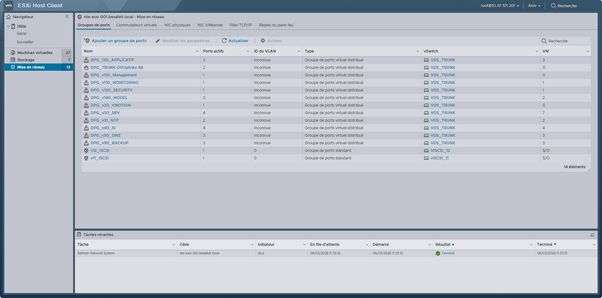
🔗 Connexion au réseau physique
Les commutateurs virtuels utilisent des uplinks reliés aux interfaces physiques de l’hôte.
Ces interfaces sont les vmnic.
Elles permettent d’acheminer le trafic vers le switch physique de l’infrastructure.
Les VLAN sont transportés via des liens trunk afin de permettre à l’hyperviseur d’exposer plusieurs réseaux virtuels.
🎯 Objectifs de cette architecture
Cette architecture réseau permet :
- la séparation des flux critiques
- une segmentation réseau forte
- une meilleure performance
- une administration centralisée
- une résilience accrue
Elle constitue la base du fonctionnement réseau de l’infrastructure virtualisée BESAFE.
💾 Étape 3 : Architecture stockage iSCSI
Cette section décrit la configuration du stockage iSCSI utilisée par l’hôte ESXi dans l’infrastructure BESAFE.
Le protocole iSCSI permet à l’hyperviseur d’accéder à des volumes de stockage distants comme s’il s’agissait de disques locaux.
Ces volumes sont ensuite utilisés pour créer les datastores VMFS qui hébergent les machines virtuelles.
🧠 Principe du stockage iSCSI
Le protocole iSCSI (Internet Small Computer System Interface) permet de transporter des commandes SCSI sur un réseau IP.
Dans une architecture VMware, cela permet :
- de connecter les hyperviseurs à une baie de stockage
- de centraliser les disques des machines virtuelles
- de permettre la migration des VM entre hôtes
- d'assurer la haute disponibilité du stockage
L’hyperviseur accède ainsi aux LUN exposées par la baie de stockage.
🔌 Adaptateur iSCSI ESXi
L’hôte utilise un adaptateur iSCSI logiciel VMware.
Cet adaptateur apparaît sous la forme : vmhba64
Cet adaptateur permet à ESXi de communiquer avec les targets iSCSI du stockage.
Contrairement à une carte HBA matérielle, cet adaptateur fonctionne via les interfaces réseau classiques de l’hyperviseur.
🔗 Port Binding
Le port binding permet d’associer plusieurs interfaces VMkernel à l’adaptateur iSCSI.
Dans l’architecture BESAFE, deux interfaces sont utilisées :
- vmk1
- vmk2
Chaque interface correspond à un réseau iSCSI distinct.
Cette configuration permet d’utiliser plusieurs chemins vers le stockage.
🔁 Multipathing
L’utilisation de plusieurs interfaces réseau permet d’activer le multipathing.
Le multipathing offre plusieurs avantages :
- tolérance de panne réseau
- répartition de charge
- meilleure performance globale
- haute disponibilité du stockage
Si un chemin réseau devient indisponible, ESXi peut automatiquement utiliser un autre chemin.
🎯 Targets iSCSI
L’hyperviseur se connecte à plusieurs targets iSCSI exposées par le stockage.
Ces targets correspondent aux volumes de stockage exportés par la baie.
Chaque target est identifiée par un IQN (iSCSI Qualified Name).
Les connexions sont établies via le port standard : 3260
Les différentes LUN présentées par le stockage sont ensuite détectées par l’hyperviseur.
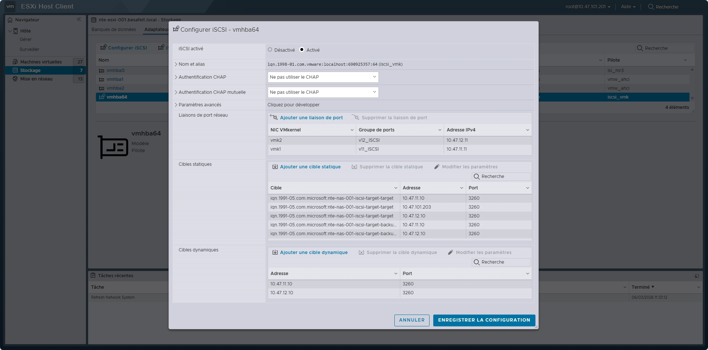
🗄️ Présentation des LUN
Une fois les targets détectées, ESXi voit apparaître les volumes sous forme de disques SCSI.
Ces volumes peuvent ensuite être utilisés pour :
- créer des datastores VMFS
- héberger les machines virtuelles
- stocker les templates
- stocker les fichiers ISO
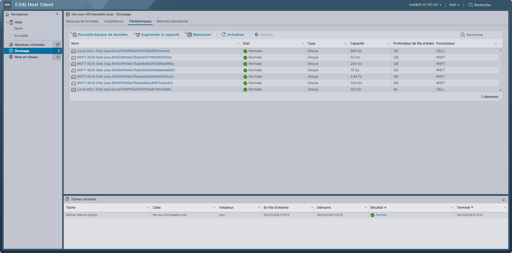
🧩 Intégration dans l’infrastructure BESAFE
Dans cette architecture, le stockage iSCSI constitue la couche de stockage partagé de l’infrastructure virtualisée.
Il permet notamment :
- la migration vMotion
- la centralisation du stockage VM
- la simplification des sauvegardes
- la haute disponibilité des services virtualisés
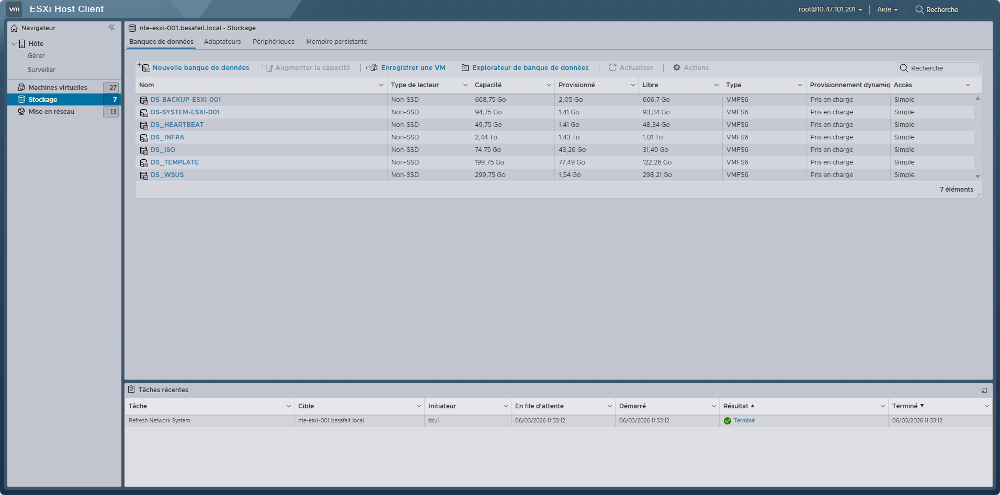
🎯 Résultat attendu
L’hôte ESXi est capable :
- d’accéder aux volumes de stockage via iSCSI
- d’utiliser plusieurs chemins réseau vers la baie
- d’assurer une meilleure résilience du stockage
Cette configuration constitue la base du stockage des machines virtuelles de l’infrastructure BESAFE.
✅ Résumé des étapes
| Étape | Objectif | Résultat attendu |
|---|---|---|
| 1️⃣ Configuration réseau de management | Définir une IP statique, DNS et passerelle | Accès stable à l’interface web |
| 2️⃣ Architecture réseau virtuelle | vmk, vSwitch, Port group | Configuration et uniformisation de l'architecture réseau |
| 3️⃣ Architecture stockage iSCSI | Initiateur iSCSI, target, LUN, DATASTORE | Reliés nos hyperviseurs à la baie de stockage |